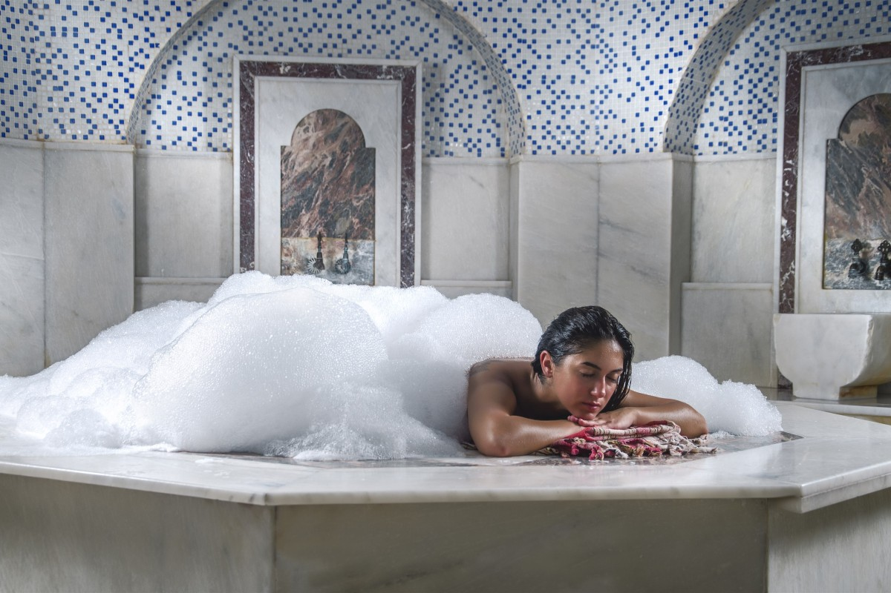
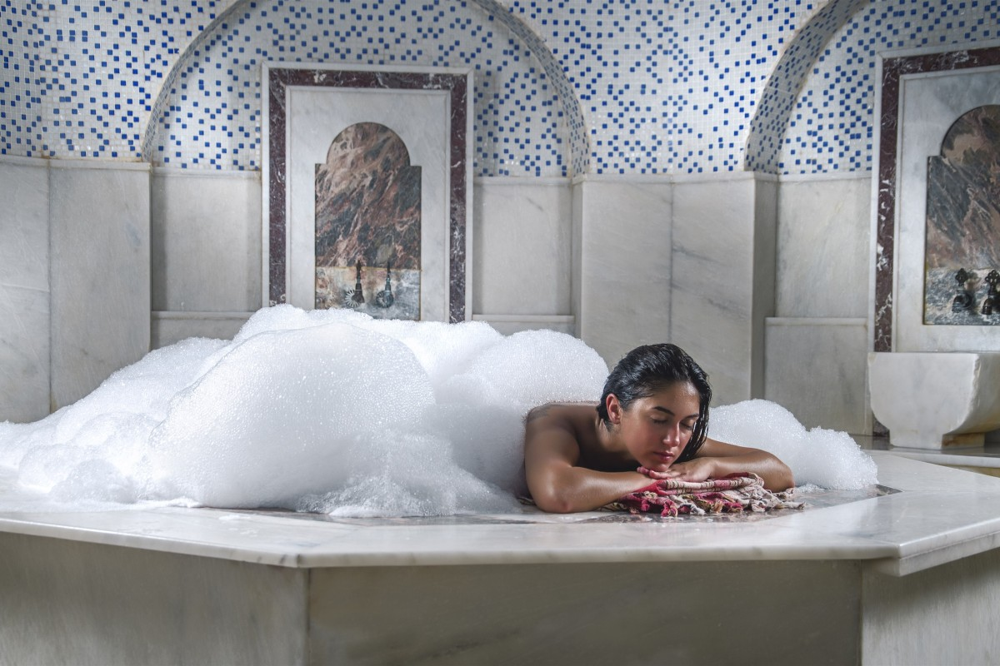

20 dk seanslı uzman masör / keseciler tarafından gerçekleştirilen masajdır.
Ölü deri tabakasının atılmasını, cildin daha sağlıklı ve canlı olmasını sağlar. Gözenekleri açarak cildi yumuşatır ve nefes aldırır. Kan dolaşımını hızlandırır.
Faydaları :
Ölü deri tabakasının atılmasını sağlar.
Gözenekleri açarak cildi yumuşatır ve nefes aldırır.
Cildin daha sağlıklı ve canlı olmasını sağlar.
Kan dolaşımını sağlar.
Geleneksel Türk hamamı kültürünün ilk aşama olarak uygulanan ve sauna terapisi sonrasında sıcak göbek taşında öncelikle yumaşamış cilt yüzeyine kese uygulanarak vücuttaki ölü derinin atılımı gerçekleştirmeye dayalı masaj türüdür. Ölü deriden arındırılan cilt, Mega Hamam kozmetik bölümünde saf ve doğal sabundan elde edilen köpük ile masaj stilinde uygulanarak vucuttaki yağ ve kirin vucuttan sabun köpüğü ile atılmasını sağlayan masaj türlerindendir. Sabunun kaygan özelliği uygulama sırasında rahatlamayı, dolayısı ile stres terapisi olmayı sağlamaktadır. Kese ve köpük masajı relax masajlara nazaran biraz daha sert baskı gerektiren bir masaj ve arınma türüdür. Mega Hamam standardında ortalama 30 dakikalık bir süreçte tamamlanan kese köpük masajı sabunun özelliğinden dolayı ekstra bir masaj yağı kullanım gereksinimi yoktur. Kan dolaşım hızını olumlu yönde etkileyen köpük masajı tüm vucudu ipeksi bir dokuyla saran köpülerden dolayı her dokunuşta eşsiz bir hisse kapılmanıza sebep olur. Toksin maddelerin deri gözeneklerinden atılma prensibinden dolayı, kese ve köpük masajı uygulamasında bu işlem artar ve cildinizin yenilenme refleksi de o oranıda hızlanır. Mega Hamam olarak en az hafta da bir kez olsun kese köpük seansını yapmanızı tavsiye ederiz.